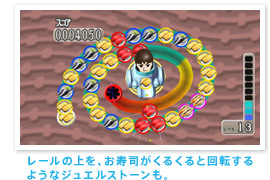
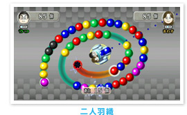

リビングにいながら、インターネットを通じてお店では販売されていないソフトをダウンロード購入できるＷｉｉウェア。もう体験しましたか？
今回は、4月22日より配信が開始された『みんなでパズループ』を紹介します。１人プレイだけでなく対戦や協力ができて家族みんなで楽しめるソフトです。
『みんなでパズループ』は同じ色のジュエルストーンを３つ以上揃えて消していくアクションパズルゲームです。Ｍｉｉの乗っている「砲台」をクルクル回し、並んでいるジュエルストーンに向けて、いろいろな色のストーンを「発射」していきます。砲台を回すには、Ｗｉｉリモコンを左右に軽くひねるだけ！ これなら、複雑な操作のゲームに不慣れな人でも、すぐに一緒に遊べます。

「れんさ」は得点がアップするだけでなく、ジュエルストーンの数も一度に多く減るので重要なテクニックです。ジュエルストーンの色が増えたり、スピードが速くなったりすると、初めは簡単だった「れんさ」も手ごたえが増してきます。その他、決められたミッションをクリアしていく「ひとりでお題」などヤリコミ要素のあるモードも搭載されています。
それだけではありません。「ひとりでお題」などで好成績を収めると、特別にいろんなモチーフのジュエルストーンが選択できるようになったりする「ごほうび」も存在するらしいですよ。ただ、全部を出現させるには、かなりのヤリコミが必要になるとか。


Ｗｉｉリモコンがあれば、最大４人までの同時プレイが可能です。多人数プレイでは、「きょうりょく」プレイと、「たいせん」プレイが選べます。「きょうりょく」プレイでは、単に協力してプレイするだけでなく、ジュエルストーンの色を分担したり、「二人羽織」というユニークなプレイなども！ 「二人羽織」は文字通り、ひとりが砲台の向きを変え、もうひとりが発射を担当します。声をかけあいながら、ワイワイ楽しみたいゲームです。
今回、Ｎ.Ｏ.Ｍスタッフ同士でも多人数プレイにチャレンジしてみました。「色分担」では、自分の色だけ消していけばよいので気楽そうですが、パートナーがジュエルストーンを消すと、位置が微妙〜にズレて、狙いとは違った場所に発射しちゃうこともあり、なかなか油断なりません。「ごめん、ごめん」「あっち、お願い」などなど、ホントに家族やお友だちとの"共同作業"というカンジ。
「二人羽織」も、発射を担当するほうはボタンを押すだけ!?なんて思いましたが、実は息を合わせないと、回転と発射のタイミングが食い違ったりするんですよね。声かけ必須！ですよ。
カンタンそうに見えて、声をかけあいながらプレイしていく感じがほかのゲームにはない魅力だと思いました。もちろん、だからって決して難しいゲームではありません。ぜひみなさんでプレイしてみてほしいです。